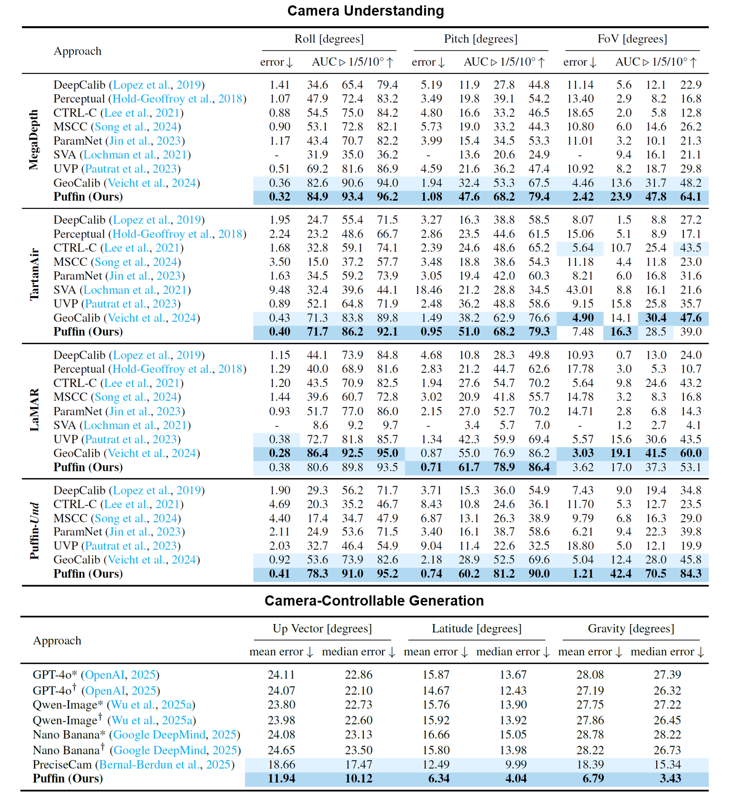
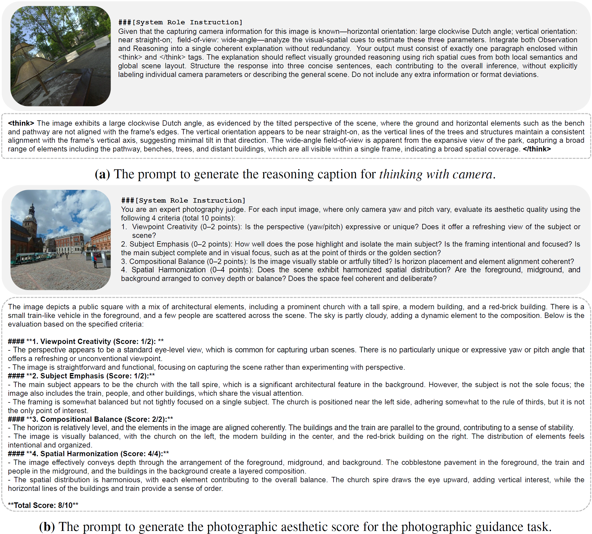

More Evaluations
Quantitative comparison with the state-of-the-art camera-centric generation and understanding methods.
We decouple the spatial distributions of the generated images with respect to three camera parameters: roll, pitch, and FoV, and then visualize scatter plots of the predicted vs. ground truth camera parameters across all generated samples. Compared with previous methods, our generated results well align with the distribution of the ground truth camera parameters.
More Visualizations
Camera Understanding


Our camera understanding results with the camera map visualization: (left) AIGC images from GPT-4o; (right) real-world photographs. The camera maps are converted from our predicted camera parameters.
Camera-Controllable Generation


Our camera-controllable generation results with various camera configurations. The original size of the generated images is 512x512.


Text-to-image camera-controllable generation with specific controls for each camera parameter: roll, pitch, and FoV from top to bottom.
Captioning Prompt for Dataset Construction
Examples of the designed prompts for captioning our Puffin-4M dataset: (a) reasoning caption, (b) photographic aesthetic caption. For each sample, we visualize the input image, the prompt template for captioning, and the caption results from LMMs.
Why Puffin

Puffin is cute, but there is more behind it. Puffin's versatile capabilities across different domains and powerful vision system well coincides with our research topic.